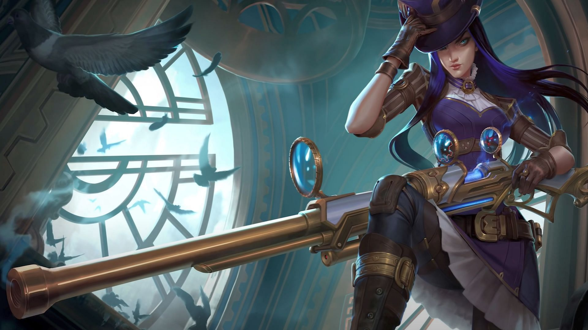

Bot lane characters are normally ranged marksmen. Marksmen have the highest damage but lowest defence out of the whole character roster. Other characters can do high damage, but marksmen are special because their damage is very consistant, not relying on cooldowns, and they have long range. This means marksmen can beat melee characters by never letting them get close and mages by having more consistant damage than they do. Bot lane characters also don't do much damage until later into the game. Because these characters never have much defense, and don't have much offense until later into the game, the bot lane has two players from each team, the bot laner and the support. The support is there to protect the bot laner until the bot laner can do enough damage to carry the team to victory.

Jhin (above) and Caitlyn (below) are two example of marksmen bot laners. Notice the guns they weild, showing their longer range.
To see a list of all Bot Laners, click Here